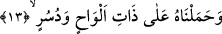
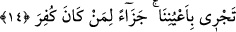

yeryüzünün gözeneklerinden suyun fışkırdığı anlatılıyor. O halde mânâ: “Suyun
kaynakları yapmakla yeryüzünü bütünüyle fışkırttık” tarzında olur. Bu da ifâdenin en
güçlüsüdür.
“(Her iki) su, takdir edilmiş bir işin olması için birleşmişti.” Göğün ve yeryüzünün
suyu birleşti ve yer küresinin en yüksek dağ tepesini seksen zira aştı. İki yerden
gelmesine rağmen iki su buyurulmayıp müfred olarak zikredilmesi, iki suyun birleşmesi
birbirine yaklaşarak yanyana gelip karışmadan kalması şeklinde değil, aksine karışıp
birleşmesi suretiyle gerçekleştiğini anlatmak içindir.
“Takdir edilmiş bir iş için” yani, az veya çok değil, Allah’ın takdîr ettiği miktarda
olduğu halde veya gökten indirilen suyun miktarı yerden fışkırtılan kadar belirlenip
dengelendiği durumdadır. Ya da, Allah’ın Nûh (a.s.)’ın kavminin tufan ile helâkını
takdir ettiği için anlamınadır.
Fakir (Bursevî) derim ki, Nûh (a.s.)’ın kavmi tufan ile cezâlandı. Zira su ilme
işârettir. Onlar uzun süre Nûh (a.s.)’ın ilminden faydalanmayıp ruhları ilme dalmayınca,
cesedleri suya batıp boğulacak şekilde cezâlandırıldılar. Bu tufanın izleri her otuz yılda
bir kez, ama hafif bir şekilde görünür. Bu sebeple çok büyük yağışlar olur. Bazı
bölgeler ve evler sel suları altında kalır.
13. Nûh’u da tahtalardan yapılmış, çivilerle çakılmış gemiye bindirdik.
Nûh (a.s.)’ı ve beraberinde îman edenleri tahtalardan yapılmış ve çivilerle çakılmış
gemiye bindirdik. Nûh (a.s.)’ın gemisinin Hind topraklarında büyüyen ve sac adı
verilen bir ağaçtan yahut şimsad ağacından ya da ceviz ağacından yapıldığı
söylenmiştir.
Aynü’l-meânî adlı eserde, “geminin tahtaları çivilerle ya da çekiç darbesiyle
tutturulmuştur” denmektedir.
Âyet-i kerîme’deki “tahtalı ve çivili” sözü, insan ismi yerine “geniş tırnaklı, düzgün
boylu” sözü kullanıldığı gibi, geminin ismi yerine geçen sıfatıdır. Yine tahtalar ve
çivilerle yapılmış sıfatı, gemi ismi yerine geçmiştir.
14. İnkâr edilmiş olana (Nûh’a) bir mükâfât olmak üzere gemi, gözlerimizin
önünde akıp gidiyordu.
Yâni gemi bizim gözetimimizde ve bizim korumamızla korunmuş olarak akıp